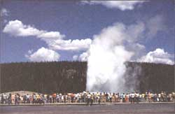
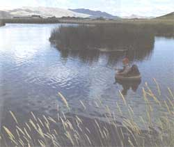
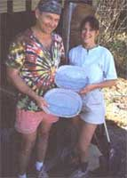
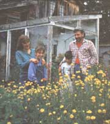

On The Road Ii
By the Mother Earth News editors
December/January 1993
GETTIN'ROUND
Joel Bourne meets more subscribers and completes his motorcycle tour through the heart of MOTHER country.
By now the throbbing, hollow notes of the Norton are comfortably familiar. They reverberate off the sheer walls of a canyon in northern Colorado, where I am putting the Norton through its paces. With the amplification it becomes obvious why they called these bikes "Snortin' Nortons." The big twin-cylinder smokes and burbles its way through the turns, the G-forces pushing me deeper into the seat. Every bike has its road and today the Norton seems to have found hers.
Most of the people I have met on this cross-country journey have been kindred spirits, environmentally aware, practicing low-impact life-styles. But every now and then I'd come across characters who were diametrically opposed to that way of thinking. The farther west I traveled, the more clearly the lines were drawn between environmentalists and their counterparts. While environmentalism is more of an intellectual argument in the East (where land and much wildlife were decimated long ago), old-timers in the West still remember a wolf howl splitting the night or finding a grizzly track beside a mountain stream. Here the fight over management of public lands, forests, and wildlife is being waged with all the passion and rage of a civil war.
The Norton expels me from the bosom of the Colorado mountains and onto the high plains of southern Wyoming, scaring a few deer and pronghorn in the process. The pronghorn, with its dark racing stripes and splendid crown of horns, is the fastest mammal in North America and can sustain speeds of more than 40 mph for up to 30 minutes. I toy with the idea of giving them a blast of the bike's horn just to witness that perfect acceleration, but they look too bored to care.
The farther I ride in the direction of Yellowstone National Park, the more I am joined on the road by rental cars, campers, and buslike motor homes. By the time I reach Jackson, construction on the highway leading to the Park has turned the traffic into a smoke-belching throng, several miles long. The flagwoman kindly waves me and a guy on a Harley to the front of the line to avoid eating the dust of a hundred Winnebagos.
Yellowstone - once the playground of thousands of bison, elk, grizzlies, and wolves - is now a zoo of people who cruise the main road on bicycles, motorcycles, cars, trucks, trailers, buses, motor homes, anything that rolls. The speed limit in the park is 45 mph, as kids and parents and grandparents press noses to windows to catch an air-conditioned glimpse of some of the Earth's most spectacular scenery.
The Norton's air-cooled engine sputters and begins to overheat, while I get dizzy from the exhaust. I pass Yellowstone Lake, Old Faithful, the sulfurous Fountain Paint Pot. Finally, near the Madison River, the traffic slows to a crawl, then stops. The stream of cars creeps forward. When I finally reach the center of attention, 50 vehicles have pulled on the narrow shoulder, all but blocking traffic. Lying in a small meadow not 20 yards from the road, a sole elk is trying to hide in the grass. A posse of amateur photographers and videographers encircle the beast and start shooting. I could almost hear Kodak's stock climbing.
Finally I reach the campground where some friends are staying and turn off the Norton engine. We're both exhausted from the brutal heat and low rpm vibration. I see my friends and rattle up to the campsite gratefully. Tonight I'd recuperate and be ready to visit MOTHER subscribers in Whitefish by tomorrow.
Montana Madness
Whitefish, Montana, was once a quiet ranching community on a crystalline lake just south of Glacier National Park. Then it had the misfortune of being discovered. A few movie stars moved in, followed by a cadre of rich ex-Californians (whom the locals call the "from-here-nows"), until land prices and rents blew through the roof. Now pickups vie with Range Rovers for parking spaces at the local Safeway.
It was a different world when Karen and Ray Hubbard and their two teenage daughters rolled into town in the spring of 1985. They had quit good jobs in Salt Lake City, packed all their belongings into three cars, and hit the city limits with $720 - their life savings - in their pockets. Karen's Mom had given her 20 acres on a steep hillside north of town, and the family moved into a tar-paper shack on the property with snow still covering the ground.
NO REGRETS:
When I asked Ray if he had any regrets about moving to Whitefish, he said "Only that we didn't move here sooner."
"When we were down to $150, I told her we could still go back to our jobs in Salt Lake," says Ray, a jovial man of 55. "She said, `Let's go see our neighbor.'" The neighbor happened to be a logger who agreed to thin their woods for a share of logs. They bartered with a nearby sawmill to get them milled. With precious little resources and their two daughters and Karen's 65-year-old mother as crew, Ray and Karen built their 2,100-square-foot dream home. They began June 1 and had the structure dried in by Labor Day.
Not that they didn't have their share of troubles. Their daughter Jeni remembers nailing subflooring in temperatures topping 110 degrees. Their other daughter Rachel, who was 14 at the time, laid out the roof by herself after Ray injured his shoulder. Karen hauled water from town, cooked over wood fires, and scavenged yard sales for necessities. When money got tight, they picked up jobs at a local laundry. The first winter, Karen cut and sold 800 Christmas trees from their front yard.
"I must have been born 100 years too late," says Karen, whose grandmother was among the early pioneers to settle Utah. Up until then, however, she had lived most of her life in the city. When she complained about her lack of homesteading skills to a friend in Montana, her friend gave her a stack of old MOTHER issues.
"I took them home and read them by flashlight," Karen recalls. "I read everything - articles, advertisements, everything." Those early articles empowered her and enabled her to overcome the preconceptions of her urban upbringing.
"I've never lost that feeling that if I've got land, I can build something on it," Karen says. "It's an attitude. People of like mind wanting to accomplish something without paying such a huge price."
Ray agrees. "Reading this magazine convinced us that we could come up here and build this by ourselves."
Compare their experience to their new neighbors from Seattle who moved in up the hill. They reportedly paid several hundred thousand dollars for a custom-built log home and immediately built a fence around the place.
When the Hubbards began their annual brush clearing on their lot to reduce the risk of wildfire, the new neighbors expressed their displeasure - through a Seattle attorney who accused them of breaking environmental laws. Ironically, Ray and Karen are avid wildlife enthusiasts. When they first moved here, a rare black mountain lion roamed their property, and Karen forbade local hunters to pursue it. Ray still supplements his income by building intricate birdhouses. Yet the experience with her neighbors left Karen bitter toward all would-be environmentalists.
For the most part, Karen and Ray say the community here is a tight one, especially if one strives to become a part of it. When Ray suffered a massive heart attack two years ago, the Hubbards had no insurance to cover his medical bills. For months afterwards, Karen says, people would approach her in the grocery store to shake her hand and offer a kind word, only to leave her holding a twenty-dollar bill. She tells me this story barely holding back the tears.
As I walk outside to the Norton, the wind is blowing up the valley, rustling the forest of trees around the Hubbards' log home. I ask them if they have any regrets. "Only that we didn't move here sooner," says Ray. "This is the only place to live."
The Town That MOTHER Built
I'd been riding through the Coast Range of Oregon for days, passing cathedral forests of Douglas fir interspersed with vast clear-cuts. It was as if Mount St. Helens had spewed "bomblets" of lava, leaving a checkerboard of destruction in their wake. Since logging in the national forests here has been curtailed, the price of timber has skyrocketed and many private landowners are cashing in their living chips.
I had passed truck after truck stacked with massive logs, and more carrying chips and chipboard. The truck in the oncoming lane is one of the latter. When it snakes around the bend, threatening to cross over to my side of the road, I am just starting to lean into the curve. I immediately straighten the bike and head for the guard rail. I get a bug's-eye view of the bumper and then pull over abruptly to the roadside, hoping the tires hold. Seconds later I am cruising through the crisp mountain air, taking the next turn as if nothing had happened. But when I reach Jeff Taylor's house some ten miles away, my hands are visibly shaking. Jeff, one of MOTHER'S veteran contributing editors, slaps a beer in my hand and it helps considerably.
Jeff had invited me to this area because of a nearby community that he felt embodied the philosophy of MOTHER. Like many small communities in Oregon's Coast Range, the area had become something of a refuge for free spirits and back-to-the-landers in the late 1960s and early 1970s. At that time, land was cheap, building codes were lax, and the loggers and mill workers who lived in these communities were amenable to their new neighbors. They lived in tents and tar-paper shacks until they could build their own homes, and eventually raised families there. Though they warmly greeted visitors, most residents prized their anonymity and requested that the name of the community be withheld. So I'll just call it Motherville.
The next evening we sat in at the weekly nickel-ante poker game, held in the community hall. The players were somewhat representative of the area: a marine fisheries inspector who works when he feels like it; a somewhat famous silkscreen artist; the local mailman who lives in a 20-year-old dome; a successful potter, and Jeff. The cards were bent and worn from use and the games grew fast and furious.
My pile of coins ebbed and flowed with Lady Luck, until finally the fisheries inspector and I were locked in a duel for the final pot. Two pair were my salvation in a game of seven-card-no-peek and I retired with pockets jingling.
The hall, decorated with elaborate quilts, was a prime example of the community's spirit. Originally an old church that had been deconsecrated, it was saved from razing by a member of the community with the understanding that it would be moved to its present location, several hundred yards from where it once sat.
Without the funds to pay someone to move the structure, or acquire the permits, a group of volunteers removed the roof, jacked the building onto log skids, and pulled it along with two bulldozers operated by local loggers. Telephone lines were raised with long poles, while the Northern Pacific freight was hailed down and kept waiting for 30 minutes as the old church cleared the crossing. By the time the state police arrived to restore a semblance of order, a crowd of hundreds had gathered to support the move. The troopers, undaunted, ticketed the bulldozers for illegal parking, then abruptly left. The next day, the silkscreen artist was quoted in the regional paper saying, "It's the American Way"
Karl Smiley, the potter, invites me out to see his recently completed house, which he built after his old studio/home was demolished by fire. A powerful man in his 40s, Karl arrived in the area in 1973 and purchased 15 acres of an old dairy farm for $6,000. "When I first came here I thought I was being led here," Karl says. "It was raining and then the sun came out and a rainbow appeared. I knew this was it."
He shows me around the two-story, barn-type structure that he and his wife, Jeanette Fair, built with help from friends. Large, south-facing windows reveal a verdant pasture and contribute to the passive, solar-energy-based design. The walls are framed but supported by huge logs that course across the ceiling. The centerpiece of the house is a wide staircase leading to the second floor, with a balustrade supported by knotted staves of polished alder.
Jeanette, who also is a potter, arrived in the community somewhat later but knew this was how she wanted to live. "People are friendly here," she says, "It's easy to fit in. There are no leaders or followers. Everyone is accepted."
"I don't think anyone here can be a follower," Karl adds with a laugh. The only issue that has caused a rift in the community, I am told, is over logging. A few years ago at the height of the old-growth controversy, someone torched a local logger's equipment. The culprit was never caught, but the logger suspected it was an act of eco-vandalism. The matter strained the relationship between the loggers and the rest of the community.
Karl and Jeanette take me to their studio located in an old trailer on the back of the property. Karl's specialty is underglazing, while Jeanette paints colorful mountain scenes on her pieces. Wind chimes, plates, and mugs are waiting to be fired. Although the two sell their work at craft fairs, art shows, and galleries from Idaho to California, they eschew the "artist" label. "It wasn't my goal in life to be a potter or an artist," Karl says dryly. "I just wanted to live here."
Life in Lorien
When Ed Rettig got out of the service in 1971, he was looking for a home. The New Jersey native was weary of the East Coast, so he packed his van and headed west. When he reached Corvalis, Oregon, the dense forests and mild climate of the Coast Range enchanted him. He stopped at the first phone booth and called a realtor in the yellow pages. The guy showed him 64 acres of timber and pasture, and he knew he had to have it. But how to pay for it? The realtor asked him if he knew anything about running a restaurant. "By 6 am. I was the new owner of an ice cream parlor," Ed says with a grin. "And I became a celebrity."
Ed redecorated the place, called it "The Gazebo," and introduced soybean burgers and honey ice cream. It became a long-hair hangout and the first vegetarian restaurant in Corvalis, if not all of Oregon. Even loggers would stop by for a cool dip now and then. One day he had a brainstorm and called experts at Oregon State University about making frozen yogurt. "They told me it couldn't be done," Ed says, shaking his head. "I still mourn that lost million."
He was so wrapped up in the restaurant that he forgot about the land. Until one day a customer came up and asked him to be a partner in a land purchase of 27 acres near Motherville. The following June he put an ad in MOTHER and sold The Gazebo to a guy from Detroit. Within two weeks he was in farrier school, fulfilling a childhood dream of working with horses. Later, he began selectively logging the tall, Douglas fir forest on the farm with draft horses, cutting the logs to construct his home. He and his wife Shannon named the property "Lorien," after the magical forest in Tolkien's Lord of the Rings.
Oddly, each aspect of Ed's life since he arrived in Oregon is depicted in the colorful blocks of a large friendship quilt made for him by the local quilters' guild. Ed's wife Shannon is a charter member, a former spinner and weaver with a degree in textile design, and a regular contributor to Threads magazine. She had made quilts before she moved, but once among the supportive Motherville community, quilting became her passion. "This community has a very strong tradition of making friendship quilts for people," Shannon says. "All the children born here have them as well."
Shannon has also pursued quilt making as an art, as well as a form of political expression. One of her quilts was banned from a show during the Persian Gulf War because of its antiwar theme. She also has created "green" quilts in support of the environment. Another won a blue ribbon in a state fair. It is one of her most treasured awards, she says, because the quilt was judged on its traditional technique.
Before I leave, Ed's partner Vince offers to show me a home video of the Motherville Summer Festival. This raucous, day-long affair is complete with craft booths, barbecue, and a talent show. The video was awash in tie-dye and flannel, and the talent featured everything from belly dancers to a bluegrass band. One of the more avant-garde performances was the Boot Dance, sort of a tap dance in galoshes stomped out with gusto by a half dozen aspiring Ginger Rogerses. The festival evolved into a party that continued late into the night, accompanied by the tunes of a band named "Acid Rain," which specializes, Vince says, in "old hippie music."
The Boot Dancers were still stomping through my head the following day when I pulled into a gas station not far from the Pacific Coast. A group of loggers were sitting around a table outside drinking coffee. I bought a cup and then came back out and sat down at a table a few feet away.
"Where you comin' from?" one of them asks.
"North Carolina."
"Where you headin'?"
"Astoria. I hear there's some pretty country up there."
"Yep. 'Cept there's too many damn trees. Oughta send some loggers to cut down a few so you could see."
"I sort of like them standing," I say. He looks at me as if I just spit in his coffee.
"Well, have a nice trip," he says. "Then leave." I laugh. They laugh. And then his brother walks over to where I'm studying the map and shows me the most scenic route up the coast.
An hour later I'm cruising down US 101 with the emerald hills of the Coast Range behind me and the blue Pacific stretching to the western horizon. The odometer ticks off another of the more than 8,000 miles I've logged since leaving North Carolina three months ago. I started this trip in search of an extended family, bound by the philosophy of a magazine that aspires to sustainable, low-impact living. What I found instead was a nation, argumentative, individualistic, doing its best to get by in hard times, but rarely too busy to help a stranger in need, or to pass time with a fellow American.
|
 U. Lefteroff/FPG After suppressing my natural clautrophobia and thrusting myself into the crush of humanity at Yellowstone Park's Old Faithful, I boosted my spirits at the crystalline Redfish Lake in Stanley, Idaho. |
 When I pulled over to give the Norton a rest, I checked the odometer. It had logged over 8,000 miles since I left North Carolina, almost three months ago. |
 Despite the increasing demand for their pottery, both Karl and Jeanette eschew the label of ""artists."" Says Karl, whose goal was never to be a potter: "" I just wanted to live here."" |
|
 Weary of the East Coast, the Rettigs packed up their van, headed to Oregon, and named their property Lorien, after Tolkien's magic forest. |
 |
|